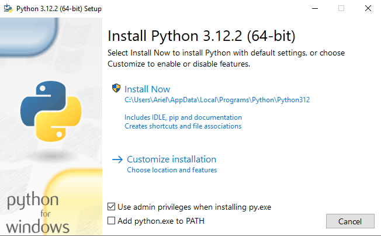
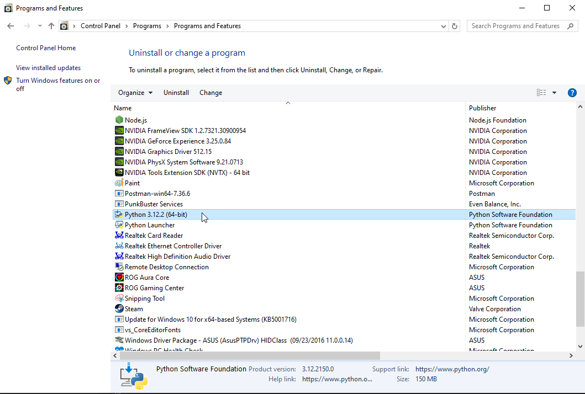

Firebase Hosting provides fast and secure hosting for your web app, static and dynamic content, and microservices. With a single command, you can quickly deploy web apps and serve both static and dynamic content to a global CDN (content delivery network).
What You Will Learn
- How to configure firebase hosting.
This is probably the easiest way to install python in your Mac computer. To install python, do the following steps:
- Visit the downloads page of Python.
- Download the latest (or your desired) version of Python.
- Open the downloaded
.exefile and a dialog box will appear like below.

- Tick the
Add python.exe to PATH, and then click theInstall Nowoption. - A dialog prompt will appear, then click
Yesto proceed with the installation progress.

- After few seconds, you will be notified if the setup is successful. Click the
closebutton to close the dialog.

There are various ways to verify if Python was successfully installed in your Windows machine.
Open Windows control panel, Python should be listed as installed software.

You can also execute the command to check the version of Python installed in your machine using PowerShell or Command Prompt.
$ python --version
# prints the following
Python 3.10.0
Congratulations! You have successfully installed Python in your machine. Happy coding!!!